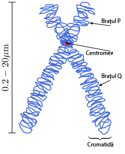

Cariotipul uman este format din 2n = 46 cromozomi – numar care a fost descoperit in 1956 de catre H. Tiju si A. Levan – fiind alcatuit din 44 autozomi, sau cromozomi somatici, si 2 cromozomi ai sexului sau heterozomi: XX la femeie si XY la barbat.
Un cromozom metafazic este format din doua brate, egale sau inegale, numite cromatide surori, structurate in urma compactarii fibrelor de cromatina din nucleul interfazic.
Fiecare cromatida contine o macromolecula de ADN dublu catenara. Cele doua catene ale macromoleculei de ADN se numesc cromoneme si prezinta, din loc in loc, aglomerari de cromatina, numite cromomere.
Cele doua cromatide sunt unite printr-un centromer, sau constructie primara.
Unii cromozomi prezinta si o constructie secundara, de care este atasat un satelit.
Centromerul imparte cromozomul in doua brate: bratul lung, notat cu litera q si bratul scurt, notat cu litera p.
Dependent de pozitia centromerului, la om exista urmatoarele tipuri de cromozomi:
- cromozomi metacentrici = cu centromerul situat in regiunea mediana a cromozomului;
- cromozomi submetacentrici = cu centromerul situat in regiunea submediana;
- cromozomi acrocentrici = cu centromerul situat in regiunea trerminala, dar nu in punctul terminal.
Morfologia unui cromozom cu satelit
